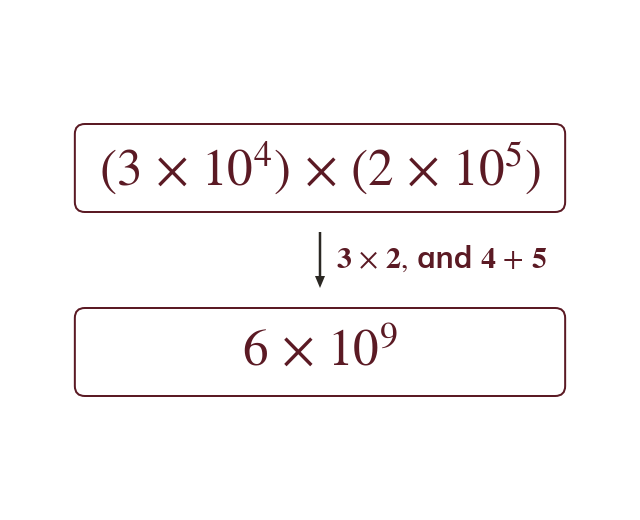

Multiplying and dividing
To multiply, multiply the A values and add the indices. To divide, divide the A values and subtract the indices. Then bring A back between and
Multiplying in standard form multiplies the A values and adds the indices; dividing divides the A values and subtracts them. The result may then need adjusting back into standard form if A no longer sits between and